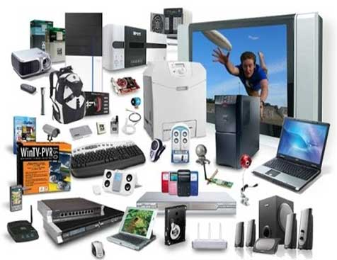

123 COMPUTER ENGINEERING
Освітньо-професійна програма - ОБСЛУГОВУВАННЯ КОМП’ЮТЕРНИХ СИСТЕМ І МЕРЕЖ / MAINTENANCE OF COMPUTER SYSTEMS AND NETWORKS.
Tип диплому та обсяги освітньо-професійної програми - Диплом фахового молодшого бакалавра, 180 кредитів ЄКТС,
Термін навчання:
- на основі БЗСО – 3 роки 10 місяців (з одночасним здобуттям ПЗСО).
- Розробка програмного забезпечення
- Оптимізація сайтів
ОБ’ЄКТИ ВИВЧЕННЯ ТА ДІЯЛЬНОСТІ студентів ВІДДІЛЕННЯ КОМП'ЮТЕРНИХ ТЕХНОЛОГІЙ та СИСТЕМ залежать від спеціальності та галузі знань:
- апаратні та програмні засоби комп’ютерної інженерії (комп’ютерні системи і мережі та їх компоненти, Інтернет речей, вбудовані та розподілені системи, операційні системи, інформаційні системи та бази даних, сервери та сховища даних, прикладне, спеціалізоване та системне програмне забезпечення); методи та способи опрацювання інформації, математичні моделі, алгоритми обчислювальних процесів, інформаційні технології та системи автоматизованого проектування для спеціальності 123. 
ЦІЛІ НАВЧАННЯ: підготовка висококваліфікованого фахівця, здатного вирішувати завдання, пов’язані з технологічною, конструкторською, адміністративною, інформаційною діяльністю на підприємствах, в установах та організаціях, нести відповідальність за результати своєї діяльності та контролювати інших осіб у певних ситуаціях
Додаткові посилання
Дізнайтеся більше про обрану спеціальність.